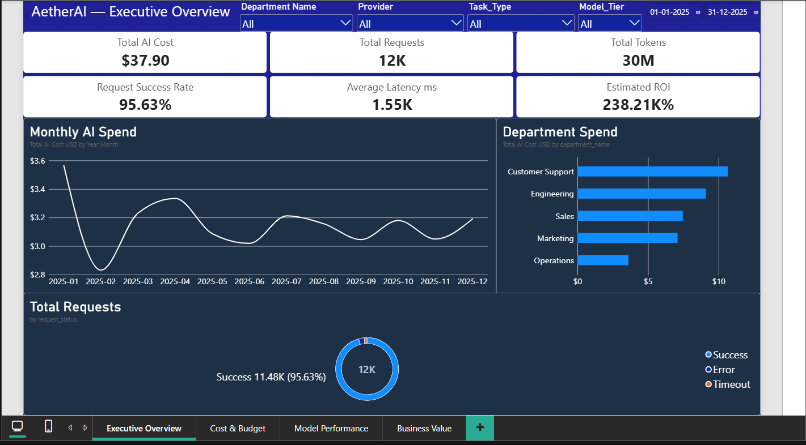

Project 01
AetherAI – AI Cost & Token Usage Analytics
End-to-end analytics project focused on AI token consumption, model-level cost analysis, department-wise spending, request performance and business value using PostgreSQL, SQL, Python and Power BI.
View Repository